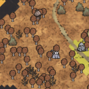
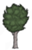
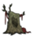

| Deciduous Forest | |
|  |
|
| Abundant |  |
| Occasional |  |
| Rare | |
The Deciduous Forest (or Birchnut Forest) is a biome found in the "Reign of Giants" DLC. It is very similar to the regular Forest biome with the exception that all the trees are Birchnut Trees which produces Birchnuts and the ground is covered with Deciduous Turfs. The Deciduous Forest also exclusively spawns Glommer Statues and Hollow Stumps inhabited by Catcoons.
Fireflies are more abundant here than in any other biome. They are abundant to the point where any section of the forest will likely have two or more spawns.
This biome a great source of Mushrooms. In fact, all mushrooms can grow here, exclusively making this biome the only surface biome that's capable of having all 3 types.
| Biomes | |
| Surface | Chess • Grasslands • Graveyard • Forest • Marsh • Mosaic • Ocean • Rockyland • Savanna • Desert • Deciduous Forest |
| Caves | Mushtree Forest • Rocky Plains • Stalagmite Biomes • Sunken Forest • Cave Swamps |
| Ruins | Abyss • Labyrinth • Military • Sacred • Village • Wilds |
| Related | Bridges • Map • Road (Trail) • Turfs |
{kind=link}
{kind=link}